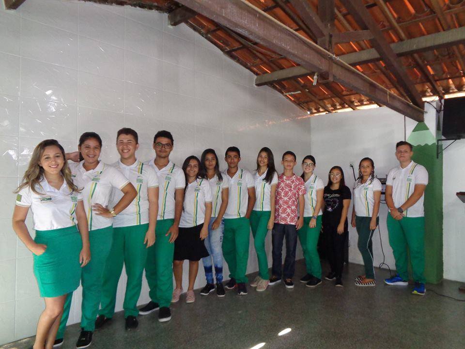

NOTÍCIAS - FEVEREIRO/MARÇO
Grêmio estudantil
Dia 28/02, foi realizada a apresentação das chapas do Grêmio Estudantil, no qual todo o alunado, bem como a equipe gestora e professores, tiveram o conhecimento de quais chapas iriam concorrer na Segunda Eleição do Grêmio Estudantil da escola.
Líderes de turma
No dia 08/03, foi realizada uma reunião com os Líderes de Turma, está para debater sobre a nova forma de avaliação dos alunos, como também, o uso da biblioteca e a realização do projeto da paz na escola, bem como formas de melhorar o desempenho dos alunos.
| Série | Líderes e vices |
|---|---|
| 1ª A | Erick e Bianca |
| 1º B | Monise e Meirilane |
| 1º C | Eduardo e Felipe |
| 2º A | Thamires * |
| 2º B | Márcia Valéria e Erika |
| 3º A | Caíque Abel e Ian |
| 3º B | Maria Isadora e Valdirene |
Avaliações
Aos dias 25 à 29/03, os alunos estiveram experimentando a nova forma de avaliação decretada pela SEDUC.